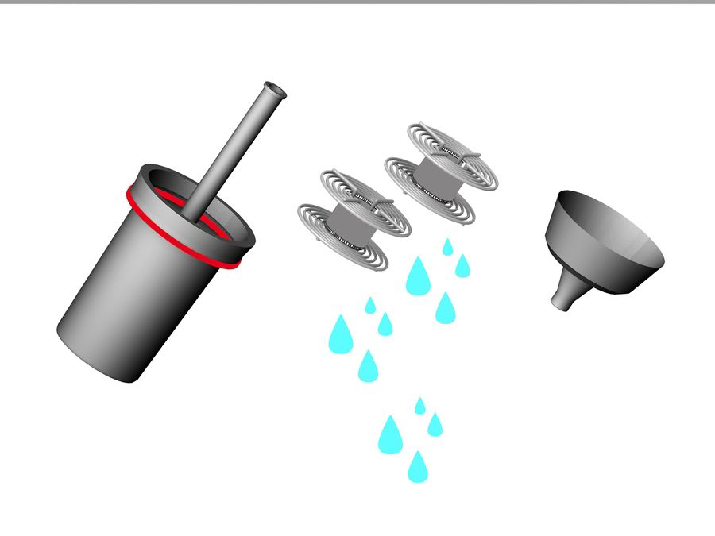
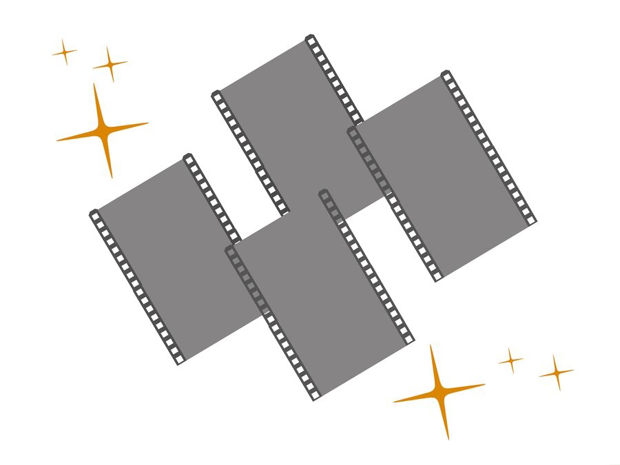

After the 10 minutes are up, lift the film reel out of the tank and lightly shake off any remaining water.
Turn the reel clockwise (could be counter-clockwise, depends on how you're holding the reel, so try them both) until the top half of the reel comes apart from the lower half of the reel. Now use one of the film clips and clip it onto the end of the film negative. Some clips have small "hooks" on them. You can run the hooks through the square holes running down the sides of the film, and thus avoid puncturing the film negative. By lifting up the clip, pull the film up out of the reel. If everything went well, you should see your pictures on the negative. Clip the other film clip onto the bottom of the negative. This will act as a weight. Hang the negative up to dry in a room temperature, dust free room. Leave the negative to dry for at least 2 hours.

That's it!
You're all done. You can now take the negatives to a store and have prints made, make your own prints, or scan the negatives and order prints online. it also very good.
